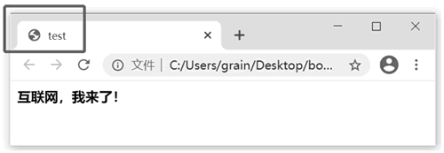
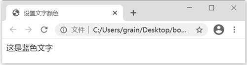
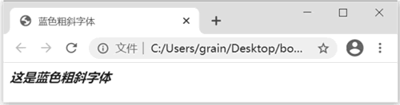
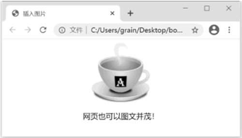

首页 > 编程笔记
HTML是什么（入门必读）
HTML 全称为 hypertext markup language，译为超文本标记语言。
先明确一个概念，HTML 不是一种编程语言，而是一种描述性的标记语言，用于描述超文本中内容的显示方式。例如，在网页中定义一个标题、一段文本或者一个表格等，这些都是利用一个个 HTML 标记完成的。
HTML 最基本的语法就是：
当浏览器从服务器接收到 HTML 文件后，就会解释里面的标记，然后把标记对应的功能表达出来。例如在 HTML 中，用 <p> 标记来定义一个文本段落，用 <table> 标记来定义一个表格。当浏览器碰到 <p> 标记时，就会把 <p> 标记之间的所有文字以一个段落的样式显示出来。
上面说的 <p> 标记和 <table> 标记都属于结构标记，也就是说它们用于定义网页内容的结构。此外，还有一类标记被称为“形式标记”，用于定义网页内容的形式。例如浏览器遇到 <b> 标记时，就会把 <b>标记中的所有文字以粗体样式显示出来。或者，“<i>网页</i>”这样一个 HTML 语句的显示结果就是斜体的“网页”两个字。
读者可以看到，HTML 具有易学易用的特点。总的原则就是：用什么样的标记就能得到什么样的效果。希望获得什么效果，就要用相应的标记。因此，学习 HTML 实际上就是学习如何使用各种 HTML 标记。
HTML5 中对此进行了简化，简单写作 <!DOCTYPE html> 就可以了。注意，它不能出现在文档的任何其他位置。
<body>标记并不仅仅是一个形式上的标记，它本身还可以控制网页的背景颜色和背景图像，这将在后面进行介绍。
构建 HTML 框架的时候要注意，标记是不可以交错的，否则将会产生错误，例如：
这个简单的网页是我们学习的起点，在后面我们会一砖一瓦地建立起一座知识的大厦。
【实例一】设置标题。

图 2 标题标记
这里运用了标题标记 <hn>（n 表示 1 到 6 的数字）。这个标记用来设置标题文字以加粗方式显示在网页中。它共有 6 个层次，也就是可以设置 6 种字体大小不同的样式。
【实例二】设置文字颜色。
<font color=#> 标记可以用来控制文字颜色，# 代表颜色的英文名称。这里的标记写法和前面的实例有所不同，标记名称 font 的后面还有一个单词 color，它被称为标记的“属性”，用于设置某一个标记的某些附属性质。
例如，color 这个属性就用于设置文字的颜色属性，常用的颜色名称有 black（黑）、gray（深灰）、silver（浅灰）、green（绿）、purple（紫）、yellow（黄）、red（红）、white（白）等。
【实例三】同时设置加粗、倾斜以及文字的颜色。
<b> 标记的作用是使其中的文字以加粗的形式显示，<i> 标记的作用是使其中的文字以倾斜的形式显示。
需要注意的是，这是一个标记间的相互嵌套，也就是将一个标记放在了另一个标记中，它们共同控制最里面的文字的显示方式。
【实例四】插入图片。
插入图片的 HTML 标记是 <img>，它有一个 src 属性，用于指明图像文件的位置。例如上页的代码中，src属性被设置为"cup.gif"，这就是说该图片和调用它的 HTML 文件处于同一目录中，这时可以直接引用其图片的名称，图片的扩展名也要一并加上。
HTML 本身十分简单，可是要用它做一个精美的网页却并不容易，这需要我们长时间的实践。在这个过程中，我们除了要多动手尝试外，还要多看，看别人的优秀网页是怎么设计、制作的。有时同一种网页效果，可以采用多种方法来完成。
先明确一个概念，HTML 不是一种编程语言，而是一种描述性的标记语言，用于描述超文本中内容的显示方式。例如，在网页中定义一个标题、一段文本或者一个表格等，这些都是利用一个个 HTML 标记完成的。
HTML 最基本的语法就是：
<标记>内容</标记>
标记通常是成对使用的，有一个开头标记就对应有一个结束标记，在开头标记的前面加一个斜杠“/”即可得到结束标记。当浏览器从服务器接收到 HTML 文件后，就会解释里面的标记，然后把标记对应的功能表达出来。例如在 HTML 中，用 <p> 标记来定义一个文本段落，用 <table> 标记来定义一个表格。当浏览器碰到 <p> 标记时，就会把 <p> 标记之间的所有文字以一个段落的样式显示出来。
上面说的 <p> 标记和 <table> 标记都属于结构标记，也就是说它们用于定义网页内容的结构。此外，还有一类标记被称为“形式标记”，用于定义网页内容的形式。例如浏览器遇到 <b> 标记时，就会把 <b>标记中的所有文字以粗体样式显示出来。或者，“<i>网页</i>”这样一个 HTML 语句的显示结果就是斜体的“网页”两个字。
读者可以看到，HTML 具有易学易用的特点。总的原则就是：用什么样的标记就能得到什么样的效果。希望获得什么效果，就要用相应的标记。因此，学习 HTML 实际上就是学习如何使用各种 HTML 标记。
HTML文件结构
作为学习的第一个实例，我们看一个简单的网页代码，如下所示：
<!DOCTYPE html>
<html>
<head>
<title>test</title>
</head>
<body>
<p>
互联网，我来了！
</p>
</body>
</html>
上面的 HTML 文件中用到了 5 个 HTML 标记，以及一个特殊的 <!DOCTYPE>声明，它们构成了简单的、完整的 HTML 文件。下面依次讲解它们的作用。1) <!DOCTYPE>声明
在整个 HTML 文件的第 1 行应该使用 <!DOCTYPE>声明，使浏览器知道这个文件的类型。HTML5 中对此进行了简化，简单写作 <!DOCTYPE html> 就可以了。注意，它不能出现在文档的任何其他位置。
2) <html>标记
<html> 标记位于 HTML 文件的开头，它并没有什么实质性的作用，只是一个形式上的标记。在 HTML 文件开头使用 <html> 标记来表示文件的开始。3) <head>标记
<head> 被称为“头标记”，放在 <html>标记的内部，其内部放置关于此 HTML 文件的信息，如提供关于该网页的索引（meta）信息、定义 CSS 样式等。4) <title>标记
<title> 被称为“标题标记”，包含在 <head> 标记内。它的作用是设置 HTML 文件标题。可以在浏览器左上方的标题栏中看到这个标题，此外在 Windows 任务栏中显示的也是这个标题，如图 1 所示。

图 1 HTML文件标题
图 1 HTML文件标题
5) <body>标记
<body> 被称为“主体标记”，网页所要显示的内容都在这个标记内，它是 HTML 文件的重点内容。<body>标记并不仅仅是一个形式上的标记，它本身还可以控制网页的背景颜色和背景图像，这将在后面进行介绍。
构建 HTML 框架的时候要注意，标记是不可以交错的，否则将会产生错误，例如：
<html>
<head>
<title>test</title>
<body>
</head>
</body>
</html>
这里第 4 行与第 5 行出现了标记交错，这是错误的。6) <p>标记
<p> 标记表示的是段落，其间的文字显示为一个文字段落。这个简单的网页是我们学习的起点，在后面我们会一砖一瓦地建立起一座知识的大厦。
简单的HTML实例
通过以上的学习，我们已经对 HTML 有了一个基本的认识。下面举几个简单的实例，希望读者能够通过这几个简单的实例，理解 HTML 的基本原理，这对以后深入掌握各种 HTML 的标记会有很大帮助。【实例一】设置标题。
<html>
<head>
<title>标题标记</title>
</head>
<body>
以下为标题样式：
<h1>H1标题大小</h1>
<h2>H2标题大小</h2>
<h3>H3标题大小</h3>
<h4>H4标题大小</h4>
<h5>H5标题大小</h5>
<h6>H6标题大小</h6>
</body>
</html>
在浏览器中打开这个网页，效果如下图所示：图 2 标题标记
这里运用了标题标记 <hn>（n 表示 1 到 6 的数字）。这个标记用来设置标题文字以加粗方式显示在网页中。它共有 6 个层次，也就是可以设置 6 种字体大小不同的样式。
【实例二】设置文字颜色。
<html>
<head>
<title>设置文字颜色</title>
</head>
<body>
<font color=”blue”>
这是蓝色文字
</font>
</body>
</html>
在浏览器中打开这个网页，效果如下图所示：

图 3 设置文字颜色
图 3 设置文字颜色
<font color=#> 标记可以用来控制文字颜色，# 代表颜色的英文名称。这里的标记写法和前面的实例有所不同，标记名称 font 的后面还有一个单词 color，它被称为标记的“属性”，用于设置某一个标记的某些附属性质。
例如，color 这个属性就用于设置文字的颜色属性，常用的颜色名称有 black（黑）、gray（深灰）、silver（浅灰）、green（绿）、purple（紫）、yellow（黄）、red（红）、white（白）等。
【实例三】同时设置加粗、倾斜以及文字的颜色。
<html>
<head>
<title>蓝色粗斜字体</title>
</head>
<body>
<b>
<i>
<font color=”blue”>
这是蓝色粗斜字体
</font>
</i>
</b>
</body>
</html>
在浏览器中打开这个网页，效果如下图所示：

图 4 蓝色粗斜字体
图 4 蓝色粗斜字体
<b> 标记的作用是使其中的文字以加粗的形式显示，<i> 标记的作用是使其中的文字以倾斜的形式显示。
需要注意的是，这是一个标记间的相互嵌套，也就是将一个标记放在了另一个标记中，它们共同控制最里面的文字的显示方式。
【实例四】插入图片。
<html>
<head>
<title>插入图片</title>
</head>
<body>
<center>
<img src=”cup.gif”>
<p>网页也可以图文并茂！</p>
</center>
</body>
</html>
在浏览器中打开这个网页，效果如下图所示：

图 5 插入图片
图 5 插入图片
插入图片的 HTML 标记是 <img>，它有一个 src 属性，用于指明图像文件的位置。例如上页的代码中，src属性被设置为"cup.gif"，这就是说该图片和调用它的 HTML 文件处于同一目录中，这时可以直接引用其图片的名称，图片的扩展名也要一并加上。
总结
通过上面的几个实例，读者可以更加了解 HTML 的概念。无论是希望在网页中显示文字，还是想在网页中插入图片，都是利用相应的 HTML 标记来完成的。用一句话概括就是，HTML 标记直接控制着网页的内容。HTML 本身十分简单，可是要用它做一个精美的网页却并不容易，这需要我们长时间的实践。在这个过程中，我们除了要多动手尝试外，还要多看，看别人的优秀网页是怎么设计、制作的。有时同一种网页效果，可以采用多种方法来完成。
关注公众号「站长严长生」，在手机上阅读所有教程，随时随地都能学习。内含一款搜索神器，免费下载全网书籍和视频。

微信扫码关注公众号